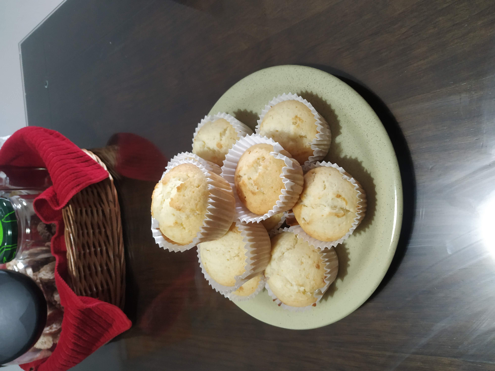

Página inicial
Cupcakes de baunilha

Lerem ipsum
Ingredientes
- 100g de ovos (2 ovos grandes)
- 115g de óleo
- 150g de leite
- 20g de vinagre de alcool
- 250g de açúcar
- 250g de farinha de trigo
- 5g de essência de baunilha
- 12g de fermento em pó
Modo de preparo
- Adicione e misture o vinagre ao leite.
- Misture todos os ingredientes liquidos.
- Adicione o açúcar, com o uso de uma peneira.
- Adicione a farinha de trigo, com o uso de uma peneira.
- Misture a massa até ficar homogenia.
- Adicione a essência de baunilha.
- Adicione e incorpore o fermento a massa.
- Colocar a massa em pequenas forminhas de cupcakes e levar ao forno pré-aquecido.
- Deixar assar a 180°C por aproximadamente 25 minutos, ou até completa.
O nossos cupcakes estaram prontos para um delicioso café da tarde ou da manhã.